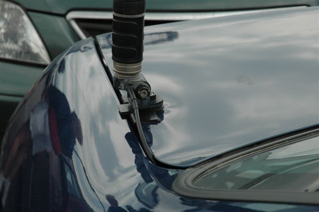

Antenna Buying Guides
Last Modified:
August 31, 2010
Contents: Basics; Advertised Specs; Short & Stubby; Monobanders; Matching; Metal End Caps; Short Tapping; Weather Sealing; Esoteric Flaw; Bottom Mast Length; Colors; Current Draw; Cap Hats; 160 Meter Antennas; Reputable Manufacturers; Conclusion;
Basics
A compromise is the art of dividing a cake in such a way that everyone believes he has the biggest piece. Ludwig Erhard
High frequency mobile antennas come in every conceivable size, weight, length, efficiency, ruggedness, bandwidth, and cost. Every single one of them is a compromise, in some way or another. Since these compromises aren't well known, it behooves every potential HF antenna purchaser to do a little research before they put down their hard-earned cash. Those compromises are included in both the Antenna Efficiency, Antenna, Commercial, and Antenna Myths articles. However, there are a few other, lessor known compromises, and they're included here.
 From a personal perspective, I'm trying to be as objective as I can be when making the suggestions herein. However, I have the advantage of first-hand knowledge in some cases, as well as input from a variety of users. This places me in a unique, and often subjective, position with respect to inferior products. Rather than call the proverbial spade a spade, I've done my best to list the factors to look for, rather than the manufacturers to shy away from.
From a personal perspective, I'm trying to be as objective as I can be when making the suggestions herein. However, I have the advantage of first-hand knowledge in some cases, as well as input from a variety of users. This places me in a unique, and often subjective, position with respect to inferior products. Rather than call the proverbial spade a spade, I've done my best to list the factors to look for, rather than the manufacturers to shy away from.
I should also add, that the inclusion, or exclusion, of any one particular brand or model, should have no weight in selecting an HF antenna. There are, after all, over 75 manufacturers of HF mobile antennas, and there may indeed be twice this number. Nonetheless, they are all subject to the exact same limitations listed in the aforementioned articles.
Every mobile operator needs to establish his/her level of performance. If you're a casual operator, perhaps a hamstick, mounted on a license plate mount might be enough. For operators like myself, who don't mind drilling holes, and building custom brackets, cheap and overly-compromised antennas are verboten. With that in mind, no doubt the greatest compromise is one of length, and that's covered first.
Tech Talk: In general, amateur radio is not an inexpensive hobby, and this fact extends to mobile operation as well. All too often, hardware choices are based on COA (cost of acquisition), rather than on COO (cost of ownership). Probably the best piece of buying advice, anyone can offer the neophyte is simply this; look beyond the bottom line. I might add, look beyond the cuteness factor too!
☜Return☜
Advertised Specs
The words advertisement and hype, are synonymous, and perhaps it should be Spec-Hype! There is so much of this in amateur radio, you'd think it was the genesis birthplace of spec-hype. There are many examples, and probably the most prevalent is coil Q. It's one thing to measure static Q on a bench, but it's a whole different animal once the coil becomes part of the antenna's superstructure. Depending on the antenna's design, the drop may be as much as 60%, perhaps more, and that's the part they don't tell you!
Of late, there is a trend to publish calculated field strength measurements using modeling software. There is a problem with all modeling software packages; they don't do a decent job of calculating ground losses. Most folks just plug-in an estimate, and when they do, it's always on the low side. For example, there's one manufacture using 6 ohms as a ground loss figure for 160 meters. When coupled with a static coil Q, rather than real-world Q, their calculated efficiency looks unbelievably good. But know this; Achieving an efficiency on 160 meters (or 80 meters for that matter) of 5% (in a mobile scenario) is very difficult! Thus, an advertised 80 meter efficiency of 14% is both ludicrous, and misleading!
If you've read the Antenna Efficiency and Antenna, Commercial articles, you'll be armed with the data to look past these fabled spec-hype figures. These include, but are not limited to, bandwidth, SWR, efficiency, and matching.
☜Return☜
Short & Stubby

Far too many amateurs purchase short, stubby antennas for their ease of installation (read that as no holes), and cuteness factor without any consideration for their lack of efficiency, or their potential RFI problems. They're often sold with trunk lip mounts, which exacerbate these inherent problems. They are not less expensive than their bigger brothers, but they are cheaper in construction in most cases. If you succumb to the lure, then know these facts.
Trunk lip (clip) mounts are not very sturdy, and sooner or later will loosen with predictable results. While they circumvent the drilling of holes, they do not circumvent damage to the vehicle as evidenced by the photo. The point of maximum antenna current is at the exact point where the motor is located. As a result, an excessive level of RF is imposed on the motor leads. Thus, extraordinary care must be used in winding the requisite motor lead choke. What's more, this choke has to be mounted outside the vehicle which is difficult at best when using a trunk lip mount. If the choke is mounted inside the trunk as is often the case, RFI problems will abound especially if you use an automatic controller.
My buying advice for short, stubby antennas? Don't, unless it's a Scorpion 680S, which is better than most other, full-sized models.
Tech Talk: As alluded to above, far too many select their mobile antenna on the ease of mounting, rather than from a performance standpoint. While contacts can be made using short, stubby antennas, even DX ones, these antennas represent a loss factor, when compared to their full-sized counterparts, of -15 dB to as much as -25 dB! This is somewhat more than one can garner by adding an amplifier. If your intent is to work DX, then a short, stubby antenna is not the stuff of champions.
☜Return☜
Monobanders
Unless you're a very casual HF operator, I don't advise anyone to purchase a monoband antenna. Yes, they are cheaper (you can buy a whole 80-10 handful of hamsticks for under $100), but you limit yourself in so many ways. Adding some insult, most monoband antennas, especially hamstick styles, are very low in efficiency, no matter your ability to work DX (which means nothing, by the way). Most amateur don't know just how poor they are, until they have a first-hand comparison.
My buying advice for monoband antennas? Save up your money for a good quality, remotely tuned, antenna.
☜Return☜
Matching
 All HF mobile antennas of decent quality need to be properly matched. When they don't need to be matched, then you need a better antenna, a better mounting location, or both! As pointed out in the matching article, the best methodology is a simple shunt coil. Because it is, several manufacturers supply shunt matching coils for their antennas. There are problems associated with most of them.
All HF mobile antennas of decent quality need to be properly matched. When they don't need to be matched, then you need a better antenna, a better mounting location, or both! As pointed out in the matching article, the best methodology is a simple shunt coil. Because it is, several manufacturers supply shunt matching coils for their antennas. There are problems associated with most of them.
First, many of the supplied shunt coils are mounted inside the antenna's mounting structure, which makes adjustment difficult at best. The solution is to follow the suggestions given in the article. Properly adjusted, a shunt matching coil will provide a low SWR over a very wide range of frequencies, without any adjustments necessary. There's a little bit of hidden advise which needs to be brought to light. If the instructions which came with the antenna state that a certain length of coax must be used, that statement is telltale that the matching scheme is less than ideal. All a specific length of coax does, is mask an SWR problem; it doesn't fix it!
Some manufacturers machine the bottom of their antenna masts into a matching coil. Since the input impedance is partly determined by the ground losses, and because the machined-in shunt coil is fixed in value, the match is typically less than ideal. When it isn't, it is a sign that the overall efficiency is suspect. This is doubly true if the instructions mention that a specific length of coax should be used.
My buying advice for antennas with machined in, fixed inductance shunt coils, is to avoid them. Those with adjustable shunt coils, might need to be relocated for best results.
There are at least two after-market shunt matching coils which fit around the bottom part of the mast. This fact reduces their efficiency considerably, and as a result they should be avoided.
☜Return☜
Metal End Caps
Several very popular HF mobile antennas have very large metal end caps, both under and over the coil housing. No matter the advertised coil Q, once the end caps are in place, coil Q drops precipitously. This causes all sorts of problems typically unnoticed by users.
For example, Hustler® sells both low power and high power monoband coils. They flaunt the wider bandwidth of their high power coils, but the real truth is, they achieve their bandwidth because their Q is lower than the Q of their low power coils.
Screwdriver antennas have to contend with the metal mass (support mast) around the coil too. However, the effect on Q is not nearly as prevalent as it is in the aforementioned case. As I said above, every HF mobile antenna is a compromise. Obviously, some are more of a compromise than others.
My buying advice for any remotely-tuned HF mobile antenna is simply this; make sure you know what those large end caps are made of. If they're metal (aluminum, or stainless steel, it doesn't matter), go elsewhere.
☜Return☜
Short Tapping
At least three remotely controlled antennas adjust the resonant frequency by moving a plunger up and down inside the coil housing. As the frequency of operation goes up, the remaining, unshorted portion of the coil is sandwiched between two metal masses (the plunger and the end cap). As a result, the coil operates above its self resonant point (acting a lot like a resistor in series with a capacitor), and becomes very lossy, resulting in very low efficiency. There is more information about this problem in the Antenna Shootout article.
The term short tapping isn't well known, and requires a little explanation. Assuming the loading coil in our antenna has too large of an inductance, and we wish to reduce it, we have two choices. We can remove turns, or we can short out the unused (unneeded) portion of the coil. If we remove turns, it's very difficult to add them back later if required. If we just short some of the turns on one end or the other with a small jumper, we can always relocate the jumper if required. However, there's a hidden problem if we do.
Shorting out unused turns reduces the Q of the coil. The occurs because circulating currents flow in the shorted portion. Some might argue that the reduction is slight. However, when approximately 60% of the coil is shorted out, Q drops almost precipitously. Any remaining coil operates very near self resonant frequency, further reducing Q. In some antenna designs, the upper bands (20 and up), become less efficient than the lower bands, resulting in near-dummy load efficiency. It isn't noticed for the most part, if you haven't a comparison.
☜Return☜
Weather Sealing
Every mobile antenna ever made has some aspect of it which could be improved. For far too many, that's weather sealing. Admittedly, some are better than others, and believe it or not, at least one is over-sealed! Over-sealing allows condensation to build up on the inside of the mast with predictable results.
In screwdrivers antennas, the predominate style, there is an outer weather shield which extends down over the mast. There is by necessity an air gap at the bottom. If designed properly, this gap is rather narrow (<1/8 inch). The shield should be fairly tight too, without any undue slack. On some models the gap is filled with a felt material, and I'm not convinced its worth the effort.
Some manufacturers use a rubberize, plastic outer cover, similar to those shock covers you see on tricked-out, off-road trucks. If the material is RF transparent, I suspect the hit on coil Q is slight. However, the material does age faster than polycarbonates, and may not be owner changeable. Make sure you ask about this if you select an antenna with one of these rubberized weather shields.
☜Return☜
Esoteric Flaw
Screwdriver antennas dominate the remote controlled market, and for good reason. There is a lot to be said about changing resonance while under way. However, besides the aforementioned end cap problem, there is a lessor known one which needs to be mentioned.
The resonant frequency of a screwdriver antenna is adjusted by changing the length of the coil above a contact assembly, mounted at the top end of the mast. The unused portion of the coil, stored inside the mast, is typically not grounded except in rare cases. Regardless of the design, the unused portion still has a fair amount of circulating currents flowing through it. How much detriment this has on coil Q depends on a lot of factors. However, one requisite design attribute is to minimize the space (clearance as it were) between the inside surface of the mast, and the outside of the coil. If the space is excessive, the circulating currents can be high enough to cause arcing between the mast and the coil, with predictable results.
At least three screwdriver antennas manufacturers use a bottom mast somewhat larger than the coil. In one case, the mast is 2 1/8 inches ID, but the coil OD is only 1 1/2 inches. It is quite common to see examples with burn evidence toward the bottom of the coil assembly. While the problem is rare, if the diameter difference appears to be more than 1/8 inch, you might want to rethink your purchase.
☜Return☜
Bottom Mast Length
The position of the coil, within the overall length of the antenna, is highly dependent on the ground losses encountered. Assuming the average overall length of an HF mobile antenna, is about 9 feet in length; if you calculate the efficiency, based on ground losses, average antenna diameter, and coil Q, some very interesting data immerges. As the ground losses increase, the optimal position of the coil increases (moves towards the top of the antenna). This fact leads to a difference of opinion about where to add length (capacitive reactance) to a mobile antenna to increase efficiency; below the coil, or above the coil. The truth is, it depends.
Under ideal conditions, we want to add the length above the coil (whip and/or cap hat), as this raises the current node higher than adding length below the coil (mast). However, the optimal location of the loading coil within the overall length (whatever it is) of an antenna, is reliant on the factors listed above. Generally speaking then, as the ground losses increase, so does the optimal height of the coil. Thus, if the ground losses are excessive, one might see a slight improvement in field strength by increasing the mast length. If ground losses are relatively low, the best improvement in field strength will always occur by adding length (capacitance) to the whip; either by lengthening it, or by adding a cap hat to it. Once again, this points out the need to keep ground losses as low as possible.
☜Return☜
Colors
Most manufacturers supply their antennas in both natural (matte aluminum), shiny (stainless steel or polished aluminum), and paint in several colors. The paint is usually applied as a powder coat, and then oven baked. Powder coating is almost a necessity if you want paint to stick to aluminum, the most common material used for masts. Some charge extra for any finish other than natural, and perhaps rightly so.
Paint nor polish improve the electrical properties of an antenna, and in some cases one could present a viable argument that aluminum is best left natural. That said, the difference is so slight as to be immeasurable. One thing coatings do, to advantage, is protect the bare aluminum from corrosion. If you live near the ocean, this certainly will increase the life.
One, very enterprising (?) antenna company openly offers a special, and expensive, conducting paint at extra cost. The paint is suppose to improve radiation resistance, by increasing the surface conductivity of aluminum. The two have no correlation to one another, and thus the claim is pure hype. Fact is, one might be able to present a case wherein painting could actually decrease efficiency. In any case, one would be hard pressed to measure the difference.
☜Return☜
Current Draw
The majority of US manufacturers making remotely controlled HF mobile antennas, use a Pittman® gearmotor. Depending on the size and type of the antenna, these motors draw between 250 and 350 mils while they're running. At stall, they may exceed one amp. This means that power for the motor should not be drawn from the radio's accessory jack, yet that is usually the case.
Several manufacturers use gearmotors designed for battery-powered drills, and ones which draw as much as 8 amps when stalled. These models need special considerations with wiring, and when using an automatic controller. Obviously, these antennas cannot draw their power from the radio's accessory!
 Tech Talk: I do not recommend drawing power for any ancillary hardware from a radio's accessory socket. It's best to use a RigRunner® or similar power tap to be on the safe side. If the ancillary hardware needs to be switched off to avoid battery discharge, instead of using switches or relays, consider a PowerWerx APO3, and make the chore fully automatic.
Tech Talk: I do not recommend drawing power for any ancillary hardware from a radio's accessory socket. It's best to use a RigRunner® or similar power tap to be on the safe side. If the ancillary hardware needs to be switched off to avoid battery discharge, instead of using switches or relays, consider a PowerWerx APO3, and make the chore fully automatic.
 At least two manufacturers still use stripped-down, rechargeable screwdriver motors (hence the name screwdriver antenna). These motors run on about 8 volts, and must use a series resistor to limit current to the motor. This resistor causes problems with both the BetterRF® and Turbo Tuner®, as both rely on measuring stall current to detect end of travel. If this is the case, then proper setup of the controller may not be a slam-dunk scenario. Incidentally, the BetterRF® unit gets its antenna power from a user supplied source, not from the radio. The Turbo Tuner® does take motor power from the radio, but may be modified so that it does not.
At least two manufacturers still use stripped-down, rechargeable screwdriver motors (hence the name screwdriver antenna). These motors run on about 8 volts, and must use a series resistor to limit current to the motor. This resistor causes problems with both the BetterRF® and Turbo Tuner®, as both rely on measuring stall current to detect end of travel. If this is the case, then proper setup of the controller may not be a slam-dunk scenario. Incidentally, the BetterRF® unit gets its antenna power from a user supplied source, not from the radio. The Turbo Tuner® does take motor power from the radio, but may be modified so that it does not.
Make sure you read the Antenna Controller article, and pay particular attention to the motor lead choke portion. Failure to follow the choke winding instructions to the letter, will cause you more grief and frustration than you can imagine. This is especially true if you've selected a short, stubby antenna.
My buying advice is, make sure you know exactly what the motor current draw is, both run and stall. If a remote control is supplied (or purchased after-market), ask where the motor power comes from. Don't guess!
Tech Talk: I recently got mildly chastised about my suggestion to use Molex connectors (How To Wind A Choke) in place of the rubber encased ones supplied by some manufacturers. Both types of connectors get wet, but the rubber ones tend to stay wet which eventually corrodes the connections. Molex connectors don't have this problem, and contrary to popular belief, that don't corrode or rust. That doesn't mean you should go right out, and change your connectors. In any case, don't cover the connector with electrical tape! If you just have to cover it, use Rescue Tape. As I mentioned above, you can actually seal some things too tight! This goes for coax connections too; no electrical tape!
☜Return☜
Cap Hats
As pointed out in the article, Cap Hats are a mixed bag of tricks. Most factory supplied ones are incorrectly made and/or mounted. As a result, instead of increasing efficiency, they lower it. Because bandwidth and input impedance both increase, uninformed amateurs too often assume this is a positive sign, and that isn't always the case. What's more, they can effect the sturdiness of the antenna depending on how they are mounted.
Tubular style cap hats have become popular, and at least two manufacturers sell them. While they do increase capacitance, the majority of that capacitance is too close to the coil, which reduces antenna efficiency.
My buying advice for cap hats, read the article first. In most cases, you're better off overall just using a longer whip if for no other reason than sturdiness, and longevity.
Digressing once more. An antenna's 2:1 bandwidth is not an indication of efficiency. A cap hat is a good case in point. Whether correctly, or incorrectly installed, an antenna's 2:1 bandwidth will increase. Presuming the increase as good or bad, requires a thorough understanding of the parameters involved. The Cap Hat article is a step toward that understanding.
☜Return☜
160 Meter Antennas
The inductance required to resonant a 160 meter, 8 foot long mobile antenna, is nearly 5 times greater than that required to resonant an 8 foot, 80 meter antenna. On average, this more than doubles the coil losses, and often brings the input impedance very close to 50 ohms. Read that as no matching required. This adds a level of complexity to proper input matching, and will usually increase coil losses on the higher bands as well (due to coil design requirements).
The 160 meter band is almost in a class by itself when compared to 80 meters, and up. It is somewhat noisier than 80 meters, especially during high sun spot activity, and efficiencies are sub 1% in most cases. Therefore, the use of a cap hat is almost a given, and an amplifier becomes all but a necessity. No short cuts with respect to mounting either.
My buying advice for remotely tuned antennas which cover 160 through 10 is, don't. If you're still set on having 160 meter coverage, that's fine, but know it comes with a special set of problems which will need to be addressed.
Reiterating; the efficiency of a 160-10 antenna on the upper bands, will typically be 3 dB less than an 80-10 antenna.
☜Return☜
Reputable Manufacturers
This is probably the touchiest subject of all, but needs to be mentioned nonetheless. Far too often, amateurs buy antenna products made by garage operators, who are nothing more than copycats. They haven't a clue about antenna design, and when an esoteric problem arises, they're lost. They also tend to be short-lived, which perhaps is a good sign, but this does bring up an important point; warranty. Sometimes, you have to read between the lines to extract the real meaning of the warranty. If this is the case, shy away.
Warranties should be well worded, unambiguous, and to the point. Pay particular attention to any mention of out-of-the-box failures, and who pays the tariff to return it if that's the case. If you're buying from a dealer, ask for details. If none are forthcoming, go elsewhere.
As alluded to, longevity is an important attribute, but sometimes it's a drawback. In two cases I'm aware of, the current owner is not the original designer. The models have stayed essentially the same for over 10 years, without upgrade or improvement. However, the model numbers have changed along with the paint color, so they did change in some fashion. The best way to counter this is to ask what improvements have been made. If you get a song and dance, then caveat emptor!
Probably the most important attribute is customer service. A pleasant personal attitude, willingness to address the problem at hand, and timeliness in doing so, are all paramount. These points are especially important when dealing directly with the manufacturer. Unfortunately, we don't always discover a lack of customer service, until after the purchase and/or when a problem arises.
Most manufacturers have web sites to support their sales efforts. Unfortunately, some of those web sites contain outlandish claims; including, but not limited to, overly-ambitious loading coil Q factors, and/or questionable field strength measurements. Remember the old adage; if it sounds to good to be true, then it probably isn't true!
☜Return☜
Conclusion
As I have said many times, it isn't just an antenna, it is the antenna. In fact, the antenna, it's installation scheme, and how well it is matched, is much more important than any other aspect of HF mobile operation. Scrimp as you must, but understand the consequences if you do. In any case, make your choice very wisely!
☜Return☜
{kind=link}